Deploying Ionic to Azure
Posted on October 10, 2017 in DevOp Updated: May 10, 2018
This blog is part of a series.
The blog is based on @sethreidnz's
article Deploying an Angular CLI project using VSTS Build and Release.
This blog deploys a Ionic 3 / Angular 4 app to Azure.
The final workflow
After your Ionic project has been connected with Azure through VSTS then you have this workflow:
- From you editor: Add feature to you project and git push to origin
- From VSTS: Queue a new build
That's it. Done. You have deployed your Ionic project to Azure as a webapp.
So why doesn't the pipeline just hook a webhook into your git origin and queue a build by itself (as you are used to from e.g. Heroku)?
Well - if you use VSTS as Version Control, then it will work - I have used "Remote repo" option - apparently it is not ready yet.
And why would you want to deploy a Ionic app as a webapp, when it is supposed to be installed on phones?
Ionic is born as PWA - you might want to use those features.
Also you just might want to demo the app as webapp before sending it to the app store.
So with Ionic you have only one codebase to maintain - checkout MillionEyez on the web and download their app. Same code.
BTW - In the coming Ionic 4 Ionic will have moved to WebComponents, which enables layout components to be loaded before the content components giving a much better experience.
You will also be able to use Ionic from any other webframework - e.g. React or VueJs.
Here is how to do
The Build server (VSTS)
Currently the build server (VSTS) is running
user-agent = "npm/3.10.10 node/v6.10.0 win32 x64".
So you should also build your app with node v6 or perhaps a bit lower. It is a bit like in .NET you would also want to build with a framework e.g. .NET 4.5.2 when the build server has .NET 4.7 - at least you don't get too big surprises when your code is build on the build server.
It should be possible to specify another node version with WEBSITE_NODE_DEFAULT_VERSION, though I haven't tried. Look for more info here.
Your local repo
So before you start deploy you should verify that your code can build for prod on node v6.
# If you got nvm switch to v6
nvm list
nvm use 6.11.4
# or just check that you have v6
node -v
# If you don't have v6 you might get surprises when you build in VSTS, but purhaps you won't.
# Build for prod
npm run build --prod --aot
If no errors then we can continue.
Your remote origin
I have forked dreamhouseapp/dreamhouse-mobile-ionic by Christophe Coenraets (@ccoenraets) to rasor/dreamhouse-mobile-ionic.
Why? Because I need to give VSTS access to my GitHub account. I can't give it access to @ccoenraets's repo.
You can fork mine, since it is modified a bit with web.config, making it runable in Azure.
BTW - You can read about @ccoenraets's code here: DreamHouse: Sample Application with Ionic 3 and Angular 4.
The \src\web.config file you need (again - thanks to @sethreidnz) for Angular projects running in IIS looks like this:
<?xml version="1.0" encoding="utf-8"?>
<configuration>
<system.webServer>
<rewrite>
<rules>
<rule name="AngularJS Routes" stopProcessing="true">
<match url=".*" />
<conditions logicalGrouping="MatchAll">
<add input="{REQUEST_FILENAME}" matchType="IsFile" negate="true" />
<add input="{REQUEST_FILENAME}" matchType="IsDirectory" negate="true" />
</conditions>
<action type="Rewrite" url="/" />
</rule>
</rules>
</rewrite>
</system.webServer>
</configuration>
It accepts Angular roouting.
To be able to include the web.config in the build you could do like this:
package.json
"config": {
"ionic_copy": "./config/copy.config.js"
},
The ionic-app-scripts will then pick up the file, when it comes to its copy step.
\config\copy.config.json
// Copy extra files from /src/ to /www/
// https://forum.ionicframework.com/t/rc0-injecting-custom-scripts/65281/20
var exports = require('@ionic/app-scripts/config/copy.config.js');
exports.copyIndexContent.src.push('{{SRC}}/web.config');
Your local repo
If you forked my repo do:
npm install -g cordova@7.0.1 ionic@3.12.0 # just in case you have not installed Ionic
git clone https://github.com/yourgithubusername/dreamhouse-mobile-ionic
cd dreamhouse-mobile-ionic
npm install # download node_modules
ionic serve # does code run without build?
npm run build --prod --aot # can you build?
Build to drop folder in VSTS
- When you have created a VSTS account via Visual Studio VSTS browse to https://yourvstsusername.visualstudio.com/_projects
- Create a project for dreamhouse-mobile-ionic - Press
New Projectand enter namedreamhouse-mobile-ionic.
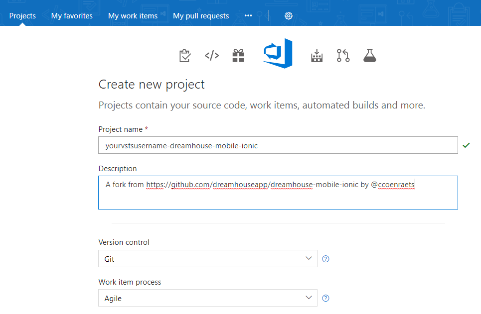 - Since your code is in GitHub, you don't need to have it in VSTS, too. So no need to look in tab
Code. - Instead goto tab
Build and Releaseand press+ Newto add a new Build Definition - more or less as you might be used to from TFS.
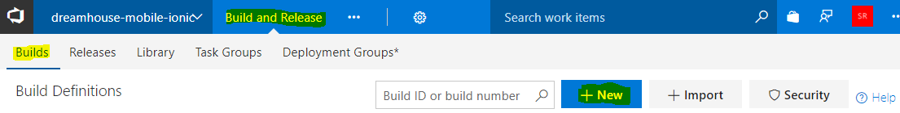 - Choose an Empty template - meaning there are no build steps to start out with
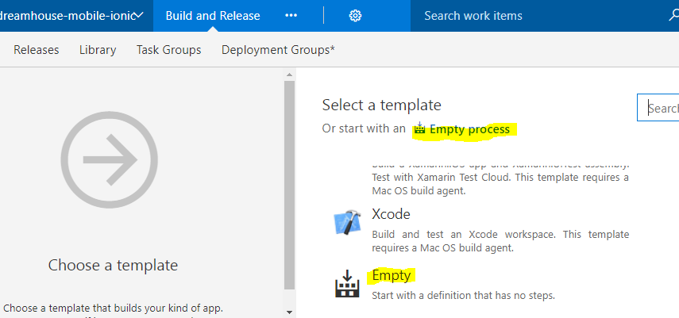 - Now you need to connect to GitHub. Select
Get sourcesin left pane and selectRemote repoin right pane. You need to authenticate towards GitHub - go through that process. In the image below I have already connected
Name:yourgithubusername_dreamhouse-mobile-ionicRepo:https://github.com/yourgithubusername/dreamhouse-mobile-ionicSet Clean totrue- Set clean options toSources
Notice - this is like when you did git clone locally 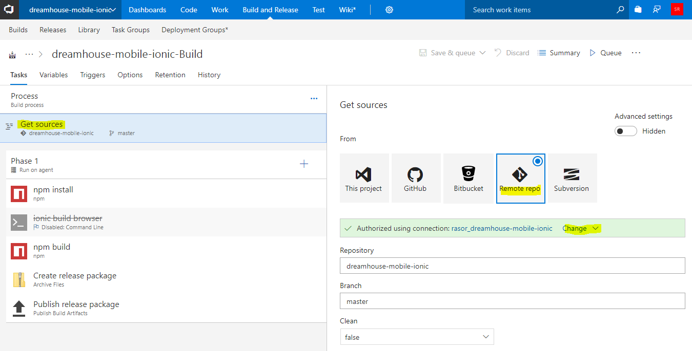 - Just above
Get Sourcesthere isProcess- select it.
Name: dreamhouse-mobile-ionic-Build
Agent Queue: Hosted VS2017 - So what did you do after git clone?
npm install. In Phase 1 press+and select npm task. 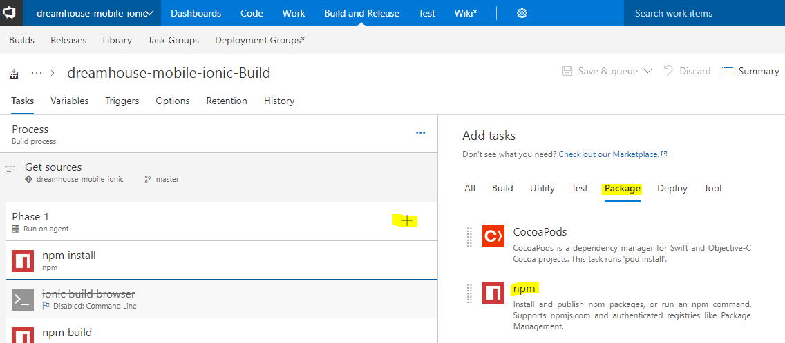 - Configure npm task by pressing the dropdown list and select
install
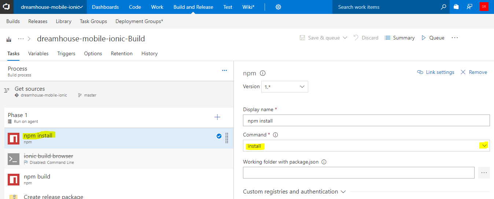 - After install you did
Ionic serve. But that was a development task - not a build task
Next build task isnpm run build --prod --aot. Go on - add yet a npm task as you did before - Configure npm task by pressing the dropdown list and select
custom, since you can't select run
Addrun build --prod --aotas Command and arguments
You probably recognize--aot- Ahead-of-Time from Angular 4. It gives faster load time, so it is quite important
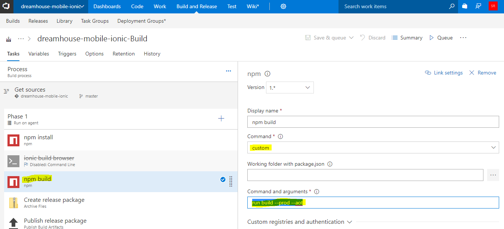 - So we ran out of steps locally, but on the build server we still need to package the build output and send it to Azure
Next task is a zip-task. Press+and selectArchive Files
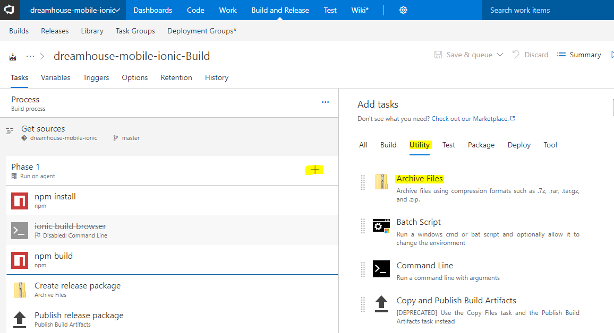 - Root folder is the build code you want to deploy. It is located in the
wwwfolder - just as when you work locally
Unselect "Prefix root folder ..."
The name of the zipped package should be$(Build.ArtifactStagingDirectory)/$(Build.BuildId).zip
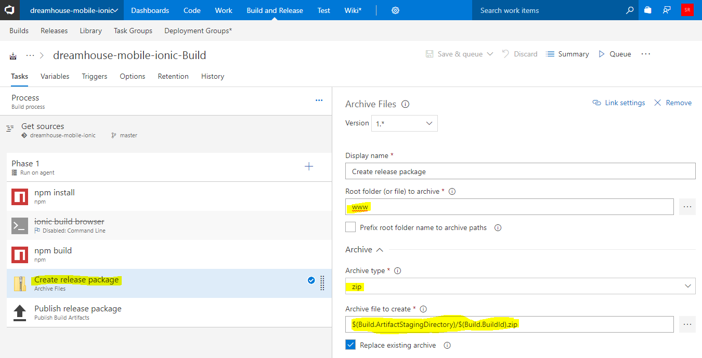 - Final build step to do is to put the package in a drop folder
Next task is a publish task. Press+and selectPublish Build Artifacts
Notice - you can create PowerShell, Shell Script and Batch Script tasks. So if you npm installed a nice utility, you could then do anything with it in a script which could be in your code e.g. `.\scripts\runkarmaandprotractortests.cmd 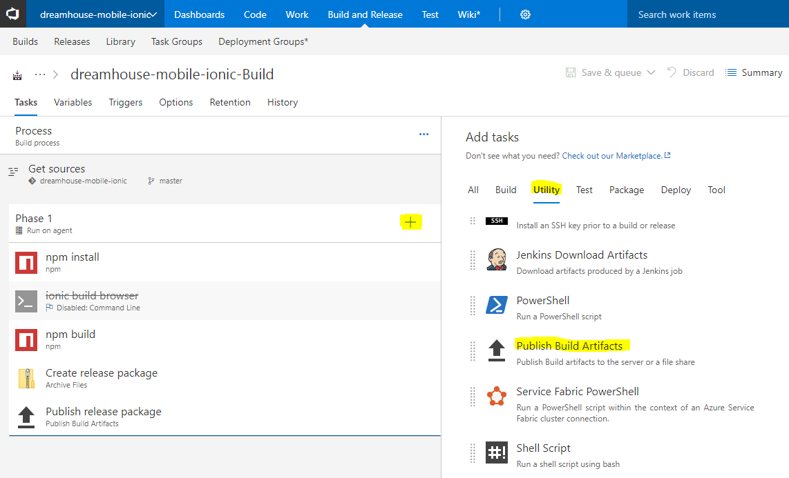 - Path to publish is the zip file you created in last step
Artifact Name is the name of the drop folder. It must be calleddrop
And Location must beTFS- that used to be called Type:Server(opposed to File Share)
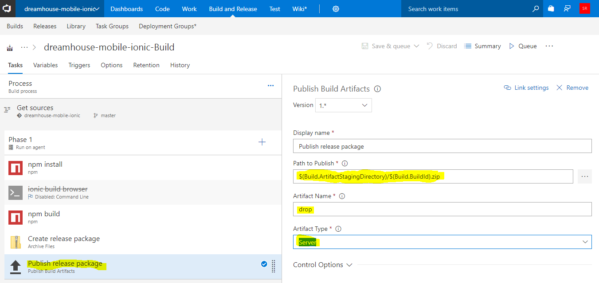 - Press
Save & queue. In top of the screen you'll seeBuild #<some-number> has been queued. - Click on
#<some-number>. Now you can see the progress of the build.
When the build has finished you'll seeBuild Succeededand above thatdreamhouse-mobile-ionic-Build / Build <some-number> / Phase 1 - Click on
Build <some-number>. Now you get 5 tabs for that build:Summary - Timeline - Artifacts - Code coverage* - Tests - Click on
Artifacts. Now you see the dropfolder. Check it out and see if it contains what you expected.
Have you noticed that these Build Tasks correspond to the features in TeamCity?
Next up is to deploy the package to Azure.
Setup WebApp in Azure
- When you have created a free Azure account via Microsoft Azure browse to Azure Portal
- The first thing you need is a place for all your stuff at Azure to live. That is called a
Resource Group
ClickResource Groupsthen+ Add
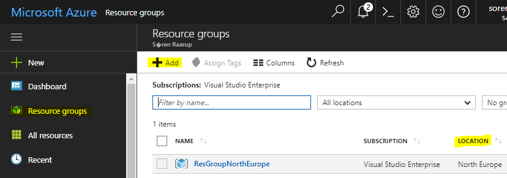 - Name - I have called mine
ResGroupNorthEurope
Location - I live in areaNorth Europe
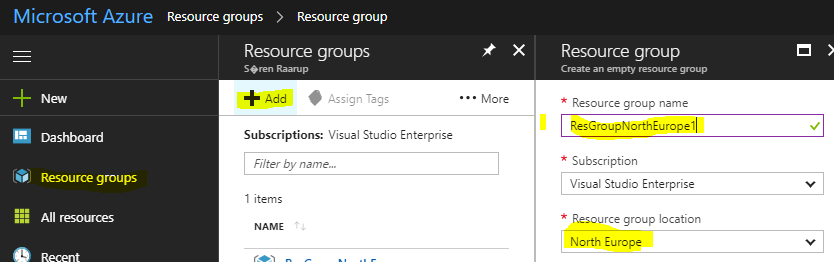 - So what do you want there? A webapp. You find that under
App Services. Click+ AddthenFilter
Then you see a variaty of categories of webapps 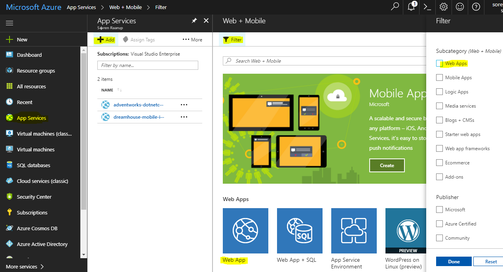 - Select
Web AppSince I have already taken subdomain dreamhouse-mobile-ionic you have to choose another one - e.g.yourvstsusername-dreamhouse-mobile-ionic
Resourse Group: Use the one you created before:`Use Existing
App Service Plan is the Dyno in Heroku or EC2 in AWS - the size of your PaaS. I have chosen the smallest: S1
Tip: You can reuse the Resource Group and the App Service Plan for several resources e.g. webapps. 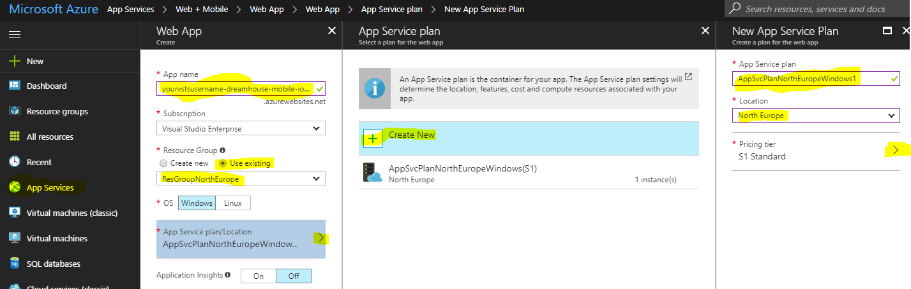
You're done in Azure. Next up is to release to Azure from VSTS.
Release to Azure from VSTS
- Go back to https://yourvstsusername.visualstudio.com/dreamhouse-mobile-ionic/_build
- You can deploy to many environments and services. We just want to deploy to our App Service.
First step is to select that target environment in a Release
Click tabReleasesthen+-Create Release Definition- SelectAzure App Service Deploymentand click Apply
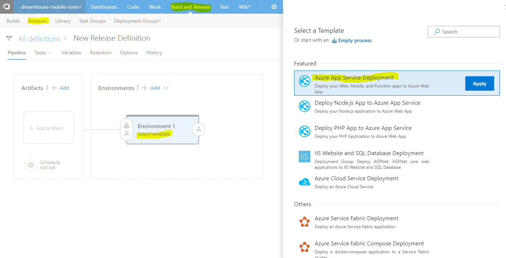 - Notice the ´!´ - something needs attention - click either of them
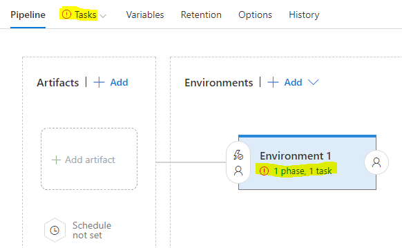 - Hey - that looks familiar - a list of steps in a task list - just as under tab
Build
Yes, but heading isEnvironment 1- notPhase 1. And for the environmet you have to connect to Azure. Click onManagesubscribtion and go through an authentication process
When connected you can click the dropdown list to select your website
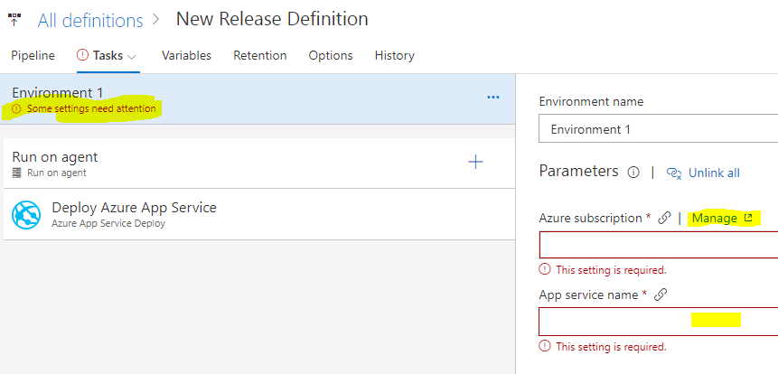 - Head back to tab
Pipeline- we need to fetch a source to deploy
SelectAdd Artifactand select source type:Build, so we can fetch the zip file from drop.
Notice: Source type can also be:Git, GitHub, Jenkins and Team Foundation Version Control.
Build Definition: Select the only one from the list.
Accept default values and press Add.
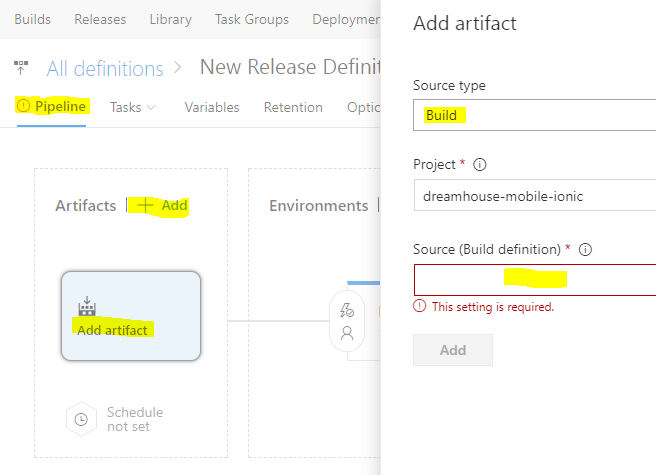 - Press the lightning icon on the Artifact. Notice the trigger is whenever a new drop has been made.
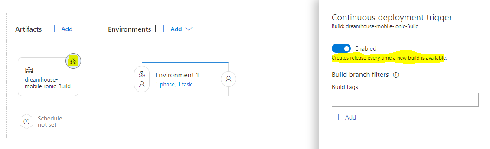 - Now that we have a source we can head back to
Tasks, selectDeploy Azure App Serviceand enter the missing zipfile:$(System.DefaultWorkingDirectory)\**\*.zip. You can browse to it by pressing...
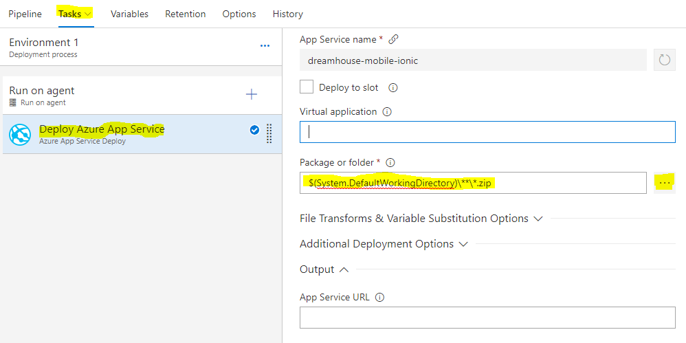 - Before we save the Release Definition head to
Pipeline- and select the Lightning in the Environment
Notice you have a possibility to select persons to approve deployment. This can be tester that approves one environment before a build is rolled out for the next environment.
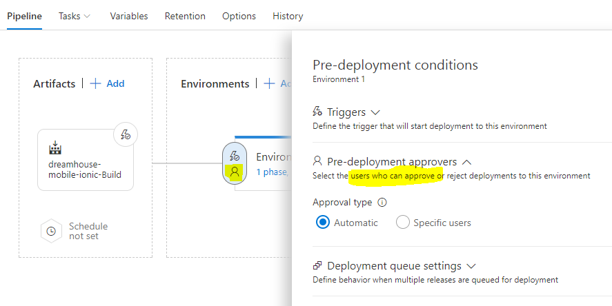 We don't want approvers - so go on and save asdreamhouse-Release.
Have you noticed that these Release workflow correspond to the features in Octopus Deploy?
Trig a build and a release to Azure
Now we are ready for the big show - deploy to Azure
- Head back to
Builds- tabAll Definitions- click on the only onedreamhouse-mobile-ionic-Build
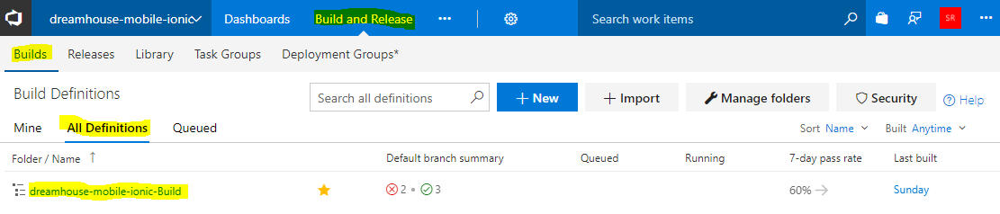 - Click
Queue New Build...
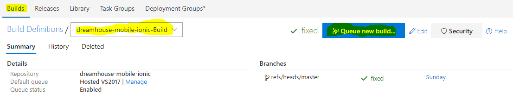 - Click
Queue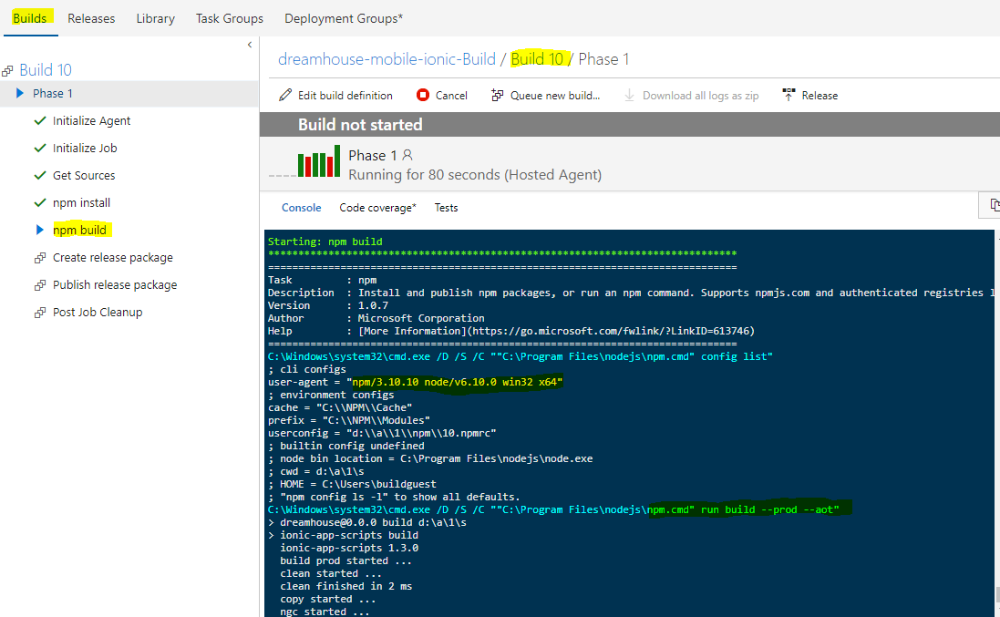 - If the Build succeded head to
Releasestab and verify that the build triggered a release
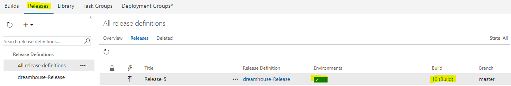 - If the release succeeded, too head to
Azure App Servicesin Azure
Select your service and scroll down toContinous Delivery
You should see the Release has been Deployed Successfully
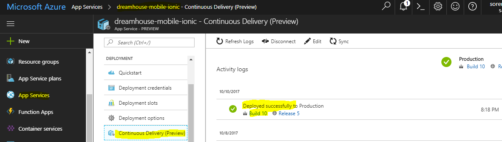
If that is true then you site should be live on
http://yourvstsusername-dreamhouse-mobile-ionic.azurewebsites.net
If you are just reading along you can also find my site here
Alternative deployments tp Azure
There are also alternative options for hosting SPA's in Azure.
- Azure Functions. I assume this is the best pick for SPA's or API's with low load.
- Azure Storage.
I don't think Azure Storage can handle SSR. Instead it is a great place for static websites like this blog. - Docker images - good for porting entire environments from dev to prod in Azure or any other cloud.
- And finally a tutorial like this blog deploying to App Services
Links
- Deploying Ionic1 to Heroku
- Deploy your .NET core app to an Azure web app
- MSDN
- Yarn with Travis CI
- Authentication and authorization in Azure App Service
- Add authentication on Cordova with Mobile Apps
- SSR with .NET Core
- Azure Mobile Apps - MBaaS - C#
- Azure Mobile Apps - MBaaS - NodeJs
- Azure CLI 2.0
- Azure CLI Samples - App Service
The End